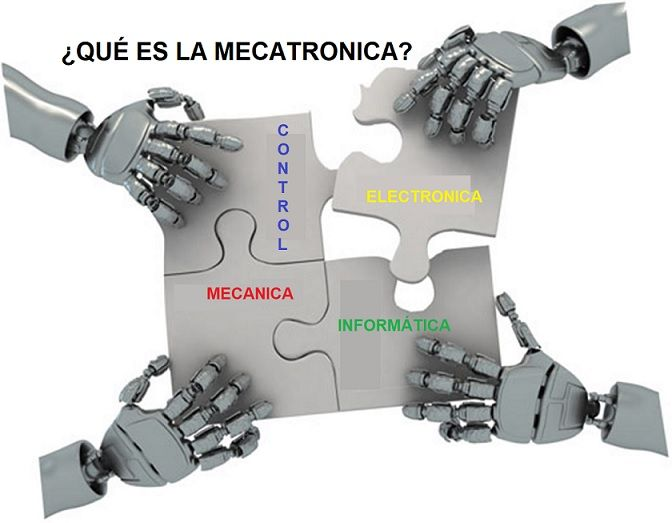

MECATRONICA
La Mecatrónica, un término que puede parecer sacado de películas de ciencia ficción. Intentaremos explicarlo de manera
sencilla como siempre. Qué es, qué puede ofrecernos, para qué sirve, etc.
Un consenso común es describir a la mecatrónica como una disciplina integradora de las áreas de mecánica, electronica e
informatica cuyo objetivo es proporcionar mejores productos, procesos y sistemas. La mecatrónica no es, por tanto, una
nueva rama de la ingenieria, sino un concepto recientemente desarrollado que enfatiza la necesidad de integración y de una
interacción intensiva entre diferentes áreas de la ingeniería.
Con base en lo anterior, se puede hacer referencia a la definición propuesta por J. A. Rietdijk: "Mecatrónica es la
combinación sinergia de la ingeniería mecánica de precisión, de la electronica, del control automatico y de los sistemas
para el diseño de productos y procesos", la cual busca crear maquinaria más compleja para facilitar las actividades del ser
humano a través de procesos electrónicos en la industria mecánica principalmente.
El campo ocupacional actual de la mecatrónica está en empresas de la industria automotriz, manufacturera, petroquímica,
metal-mecánica, alimentos y electromecánica, realizando sobre todo actividades de diseño, manufactura, programación de
componentes y sistemas industriales y equipo especializado, así como en la promoción y activación de empresas de servicios
profesionales.
Temas Relacionados:
Definición de Mecatrónica - Qué es y Concepto - Definición MX
Mecatrónica - Saberes y Ciencias | Saberes y Ciencias
Mecatrónica todo sobre la Ingeniería Mecatrónica - Estudiar Ingeniería
¿Qué es la Ingeniería Mecatrónica?
Videos Relacionados:
Qué es la Mecatrónica
¿Quieres estudiar MECATRÓNICA?
Introducción a la Mecatrónica | MECAUNEXPO
¿Qué es la ingeniería mecatrónica? Todo lo que debes saber

3D PRINTING
Recibes por Internet el plano que le compraste a una empresa de un reloj que te gustó, ubicas los consumibles y cargas toda
la información en tu impresora. En cuestión de horas tienes un producto a tu gusto, “hecho en casa”, incluso si quieres
puedes imprimir alimentos. No, no es ciencia ficción, son las llamada impresoras de tecnología aditiva o 3D, las cuales
romperían la cadena de distribución entre marcas y consumidores.
El llamado 3D printing no es nuevo, desde hace una década industrias como la aeronáutica o la automotriz hace uso esta
tecnología de manera habitual. Por ejemplo, una máquina “imprime” un prototipo de titanio del tamaño de un zapato, el cual
normalmente tendría que ser laboriosamente tallado en un bloque de metal. De este modo a un costo más bajo precio se
produce cosas verdaderas antes de emprender la producción en masa. Sin embargo, eso sólo es el principio.
En el 3D Printing la impresión responde al envío de un archivo digital donde la diferencia es que “la tinta” es un material
que depositado sucesivamente en capas finas hace que un objeto sólido de conforme. Es tan fascinante como se lee. Su uso
apunta hacia implantes médicos, joyería, zapatos de futbol diseñados para los pies de determinada persona, pantallas,
autopartes de automóvil y teléfonos móviles personalizados.
Lo que hace especial a estos equipos es la habilidad para imprimir capas muy delgadas de un material según lo que se
busque imprimir de manera sucesiva hasta obtener un objeto en tercera dimensión, es decir, un objeto real para la vida
diaria.
Temas Relacionados:
Impresión 3D
Impresoras 3D ¿Qué son? ¿Cómo funcionan?
Definición de impresora 3D - Qué es, Significado y Concepto
¿Qué es la impresión 3D? | Tecnología de impresión 3D | Autodesk
Videos Relacionados:
¿Qué es una Impresora 3D y cómo funciona?
Impresora 3D | Cómo Funciona una Impresora 3D | Objetos Impresos en 3D
Impresora 3D | Primeros pasos | Anet A8
10 Cosas Sorprendentes hechas con Impresoras 3D
TECNOLOGIA 5G
Las redes de telecomunicaciones de la próxima generación (5G) llegarán al mercado hacia 2020. Más allá de las mejoras en
la velocidad, se espera que la tecnología 5G desate todo un ecosistema del Internet de las Cosas masivo en el que las redes
pueden satisfacer las necesidades de comunicación de miles de millones de dispositivos conectados, con un equilibrio justo
entre velocidad, latencia y costo.
La red inalámbrica de la próxima (5ta) generación abordará la evolución más allá del internet móvil, y alcanzará al Internet
de las Cosas masivo hacia 2020. La evolución más notable en comparación con las redes 4G y 4.5G (LTE avanzado) actuales es
que, aparte del aumento en la velocidad de los datos, los nuevos casos de uso del Internet de las Cosas y de la comunicación
requerirán nuevos tipos de desempeño mejorado; como la “latencia baja”, que brinda una interacción en tiempo real a los
servicios que utilizan la nube, lo que resulta clave, por ejemplo, para los vehículos autónomos.
A diferencia de los servicios actuales del Internet de las Cosas que sacrifican rendimiento para sacar el máximo provecho a
las tecnologías inalámbricas existentes (3G, 4G, WiFi, Bluetooth, Zigbee, etc.), las redes 5G estarán diseñadas para
alcanzar el nivel de rendimiento que necesita el Internet de las Cosas masivo.
La siguiente generación de redes de telecominicaciones (5G) saldrá al mercado en 2020. ?Más allá de mejorar la velocidad,
se espera que las redes 5G liberen un ecosistema masivo de IoT en el que las redes puedan cubrir las necesidades de
comunicación de miles de millones de dispositivos conectados, con la combinación adecuada entre velocidad, latencia y costo.
Temas Relacionados:
¿Qué podremos hacer con la tecnología 5G? - Muy Interesante
Qualcomm demuestra cómo funciona su tecnología 5G para teléfonos inteligentes
TECNOLOGÍA 5G: MÁXIMA CONECTIVIDAD Y VELOCIDAD
Así será el 5G, el sucesor del 4G
Videos Relacionados:
Así será el 5G que cambiará nuestra forma de utilizar el móvil #ElFuturoEsApasionante
La Siniestra tecnología 5G
¿Qué es el 5G y por qué es necesario?
Qué son las redes 5G y cómo funcionan
RESUMEN
Con relación a esta practica final, he aprendido bastante sobre el desarrollo de paginas web, como por ejemplo el
uso de las etiquetas de HTML, y aprendi bastante sobre el uso de los estilos en CCS3. Mediante una investigación que realice
me permitieron realizar un diseño responsivo de la pagina, asi puede ser visualizada tanto en equipos moviles tales como tablet,
y smartphone, como tambien en aplicaciones de escritorio, como por ejemplo en navegadores web de equipos de computos portatiles.
Las clases me permitieron aclarar muchas ideas que tenia sobre lo relacionado con el desarrollo de paginas web responsivas
y la aplicacion de estilos. Acerca de los temas desarrollado pude despejar mis ideas sobre las criptomonedas y como funcionan las minas,
e incluso pude investigar sobre el alquiler de equipos con altas prestaciones para proceder a minar criptomonedas.